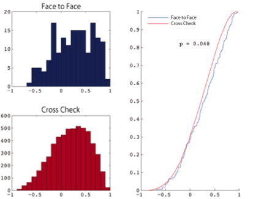

Research 03
共感性
３.「共感性」のしくみを探る
「ヒトの共感能力とは何か」という問いは、社会的存在としての人間を考える上で極めて重要です。痛みや恐れ・興奮が集団内で伝搬するといった「原初的な共感」は、群れ生活を営む動物が同種他個体の反応をモニターし、その反応を自らも引き受けることで、捕食者の出現などの環境変化に直ちに反応できるように身体的に準備するといった適応的機能をもつでしょう。これに対して、ヒトに特徴的とされる「高次共感」の機能的意義についてはほとんど分かっていません。ヒト社会において特徴的とされる「共感性」が、ほかの動物種とどこまで連続で、どのようにユニークなのかを解明することは、「ヒトの心の本質的な社会性」を理解するうえで極めて重要なポイントです。本プロジェクトでは、「痛み反応の同期化現象」を軸に、ヒトの原初的共感と高次共感の相互作用を探ります。また、相手との関係に応じて共感性がどのように変化するのかについて、注意配分や情報探索行動、自律神経系反応の計測を軸に解析し、得られた結果を他の動物種と比較します。さらに、課題遂行中の脳活動をfMRIにより計測することで、共感の質・量の違いと相関する脳部位を特定し、これらの脳部位の賦活パターンが行動の個人差とどのように連動するのかについても併せて解明しようとしています。 
科学研究費補助金・新学術領域研究（研究領域提案型）「ヒト社会における共感性」(平成25−29年度 PI 亀田達也)